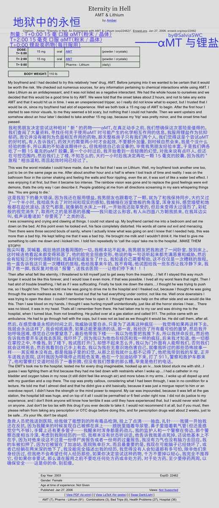
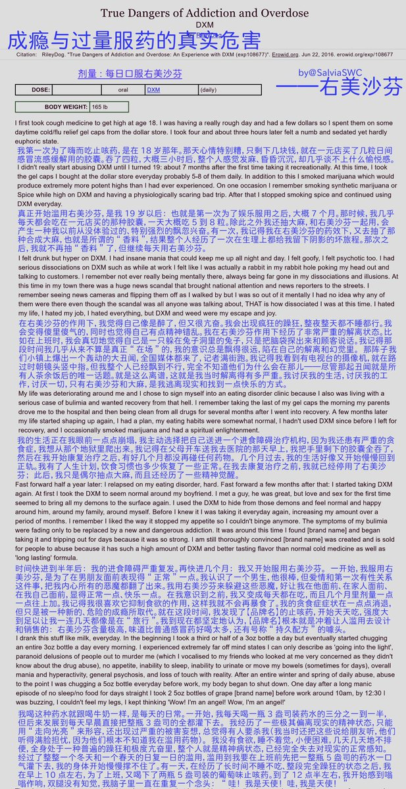
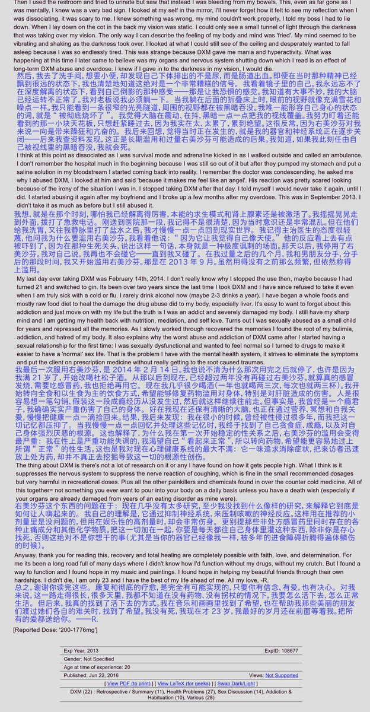

《地狱中的永恒》——αMT&锂盐
"我"服用30mg的某种色胺类致幻剂，这剂量本不高，却造成严重恶劣幻觉和精神病发作，并被送入医院。日常服用的锂盐被怀疑是罪魁祸首。
珍爱生命，禁止联用锂盐和血清素能致幻剂🥺否则，你可能会享受到文中的一样恐怖情形。如果你日常服用锂盐，请遵医嘱，不要服用迷幻剂哦

"我"服用30mg的某种色胺类致幻剂，这剂量本不高，却造成严重恶劣幻觉和精神病发作，并被送入医院。日常服用的锂盐被怀疑是罪魁祸首。
珍爱生命，禁止联用锂盐和血清素能致幻剂🥺否则，你可能会享受到文中的一样恐怖情形。如果你日常服用锂盐，请遵医嘱，不要服用迷幻剂哦



《成瘾和过量服药的真实危害》——右美沙芬
“我”为压抑许久后才被重新发掘的童年被性侵的创伤记忆，每天滥用右美沙芬，虽然最终得以戒除，自己的身心健康却已经受到损害。
唉，这个世界好残酷，我们什么时候才能有健全的心理卫生服务系统？😢如果你也在挣扎，一定要坚持住哦，让我们一起看到那一天吧🥹 https://t.co/WKqGrJt0hD https://t.co/IXjiZj6DoY
“我”为压抑许久后才被重新发掘的童年被性侵的创伤记忆，每天滥用右美沙芬，虽然最终得以戒除，自己的身心健康却已经受到损害。
唉，这个世界好残酷，我们什么时候才能有健全的心理卫生服务系统？😢如果你也在挣扎，一定要坚持住哦，让我们一起看到那一天吧🥹 https://t.co/WKqGrJt0hD https://t.co/IXjiZj6DoY